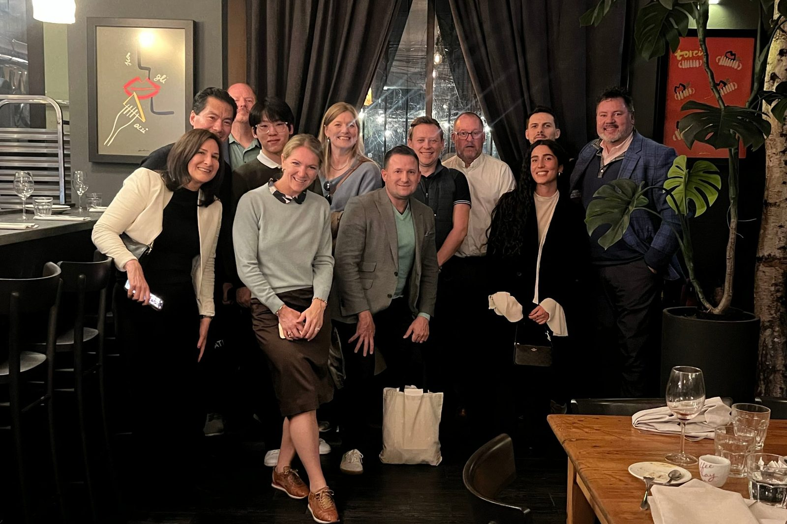
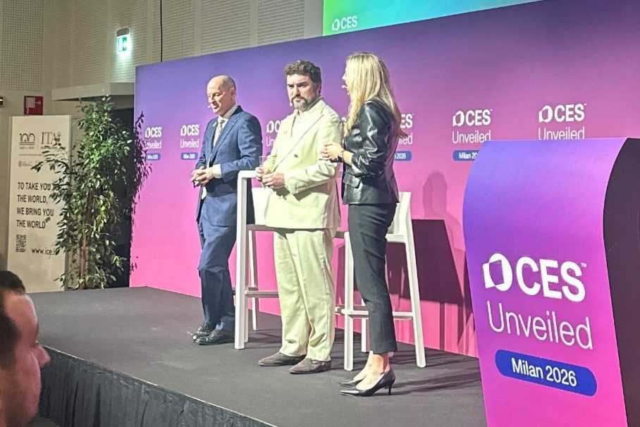
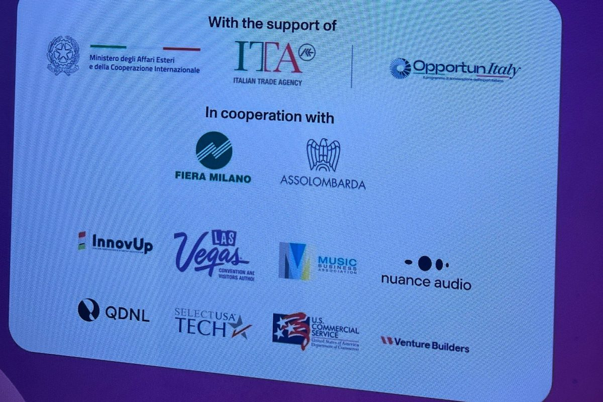
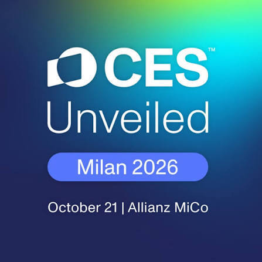
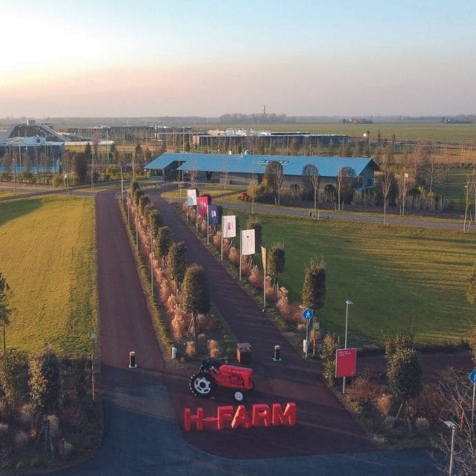

Ireland and Italy
In October we brought a group of accelerator, venture studio and innovation hub builders across two countries: Futura Innovation Conference in Limerick, CES Unveiled in Milan, and H-Farm in the Venice countryside.
No pitch sessions and no packed agenda. Just a week of builders comparing notes with each other and with the people running some of Europe's most interesting programs.
Highlights
A week well spent
Three stops, two countries, and a group of builders who now have a lot more people to call.



Limerick. Retreat guests joined Futura Innovation Conference as part of the wider Futura community, with Funded House at Jerry Flannery's Bar as home base and a venture builder show-and-tell.
Milan. A day at CES Unveiled by CTA, including a VIP tour of select startups with Brian Comiskey, then cocktails at Le Village by CA, hosted by Business France, the following evening.
Venice. Lunch with the entrepreneurship fellows at H-Farm, a campus tour, and a fireside on US startups and investing led by Tim O'Connell, with an optional visit to the Venice Biennale.
Thank you to our hosts: Futura and Funded House in Limerick, CTA in Milan, Business France and Le Village by CA, and the whole H-Farm team.
Watch
Lessons from H-Farm
What we took away from our day at H-Farm, one of Europe's leading venture builders, on its campus in the Venice countryside.
The stops
One week, two countries, three stops
Futura Innovation Conference
A citywide innovation gathering bringing together founders, investors, researchers, and builders across Ireland, Europe, and beyond. Venture Builders Retreat guests were there October 19–20, joining as part of the broader Futura community.
There's a pub in Limerick with our name on it! In collaboration with Funded House, Venture Builders Retreat guests had a home base while at Futura: Funded House at Jerry Flannery's Bar, 20 Catherine St, Limerick. Less programming, more of the people worth knowing.
Venture builder show-and-tell: Monday, October 19.

CES Unveiled by CTA
A single-day showcase of what's next in technology and venture, hosted by CTA at Allianz MiCo on Wednesday, October 21. Venture Builders Retreat guests had access and a VIP tour of select startups with Brian Comiskey, CTA's VP of Innovation and Trends.
Thursday, October 22: cocktails at Le Village by CA, the Crédit Agricole startup accelerator at Corso di Porta Romana 61, Milan, hosted by Business France.

H-Farm
A visit to H-Farm, one of Europe's leading venture builders, set on a campus in the Venice countryside. On Friday, October 23, we arrived by train for lunch with the entrepreneurship fellows, a campus tour, and a fireside conversation about US startups and investing led by Tim O'Connell, followed by drinks with the group and the H-Farm team. On Saturday, October 24, an optional visit to the Venice Biennale.
Want in on the next one?
We're already planning the next Venture Builders Retreat. If you build accelerators, venture studios or innovation hubs, let us know you're interested and we'll keep you posted.